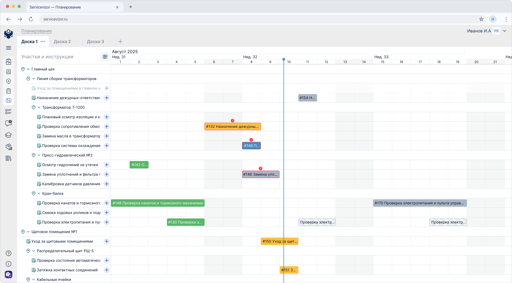

Scheduling equipment inspections in ServiceVizor
Managers used to create each inspection task by hand and check dates in a list. I designed a Gantt chart and recurrence settings for the people scheduling maintenance work.
About the project

How managers built the schedule
Maintenance teams handle both scheduled inspections and unexpected repairs. The ServiceVizor list showed dates for each task separately. Managers had to compare dates to see which jobs overlapped the following week. Teams kept schedules in Excel or drew them by hand.
I interviewed two inspection managers about their daily work. I also spoke with our own manager about his use of Gantt charts and compared scheduling in Jira, Weeek and Excel. We chose two priorities for the first release: setting up recurring rounds and adjusting dates with nearby jobs in view.
Why we made recurring tasks a separate type
Scheduled inspections follow a recurring pattern. A repair is scheduled when equipment breaks down. We gave each its own task type. A manager creates a one-off task for a repair. For inspections, they define a rule that generates a task for each round.

A series can end on a date or after a set number of occurrences. Creation time and initial status are separate settings. A task can be created in advance as scheduled or made available to the operator immediately.

Moving work on the timeline
The timeline shows which jobs overlap and how long each lasts. Managers can switch between week and month views. Colour shows status, while a red outline and an exclamation mark flag overdue work.
I separated viewing from editing. Hovering reveals details and clicking opens the task. Managers drag the bar to reschedule work or its edge to change the duration, keeping adjacent jobs in view.
I reused buttons and colours from the design system. For the chart itself, I designed task bars, tooltips and recurrence markers. View task states

What we deferred
We considered a total duration for each production area so managers could estimate the work without expanding the task list. Calculating the total across every nested level would add processing overhead. With the benefit still untested, we left it out of the first release.

Comparing actual and planned work
After designing the schedule, I looked at completed work. The Gantt chart shows when an individual job is scheduled. The widgets help managers see whether the team finishes on time and which steps take longer than planned.